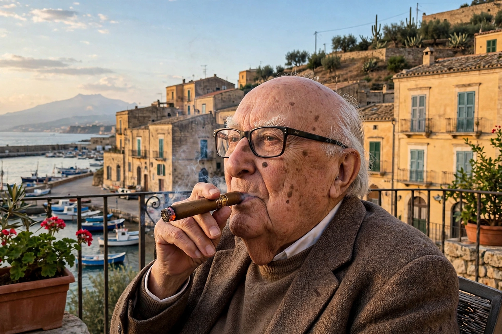

Andrea Camilleri
 | |
| Born | Andrea Calogero Camilleri, September 6, 1925, Porto Empedocle, Sicily, Italy |
|---|---|
| Died | July 17, 2019 (aged 93), Rome, Italy |
| Occupation | Novelist, theatre and television director |
| Notable works | The Inspector Montalbano novels, beginning with The Shape of Water (1994) |
Andrea Calogero Camilleri (Italian: [anˈdrɛːa kamilˈlɛːri]; September 6, 1925 – July 17, 2019) was an Italian writer. He is best known internationally for the Inspector Montalbano mystery novels, set in the fictional Sicilian town of Vigàta and written in a distinctive mixture of Italian and Sicilian dialect.
Life and career
Camilleri was born in Porto Empedocle, Sicily. He worked for decades as a director of stage plays (including early Italian productions of Beckett and Pirandello) and of television and radio drama for RAI. He began publishing fiction late: his first successful novel, The Hunting Season (1992), appeared when he was 67.
Montalbano
The Shape of Water (1994) introduced Commissario Salvo Montalbano — named in homage to the Spanish writer Manuel Vázquez Montalbán — a food-loving, literature-loving police inspector in Vigàta (modeled on Porto Empedocle). Thirty volumes followed; they have been translated into more than thirty languages, sold over 30 million copies, and adapted into the long-running RAI television series Inspector Montalbano (1999–2021) starring Luca Zingaretti, filmed around Ragusa and Scicli. The final novel, Riccardino, was written in 2005–06, kept in a drawer by agreement with his publisher, and published posthumously in 2020. Camilleri also wrote historical novels, including The Revolution of the Moon. He died in Rome in 2019.